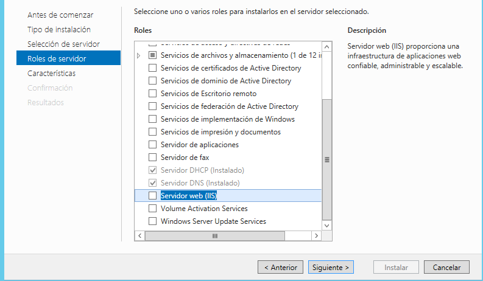
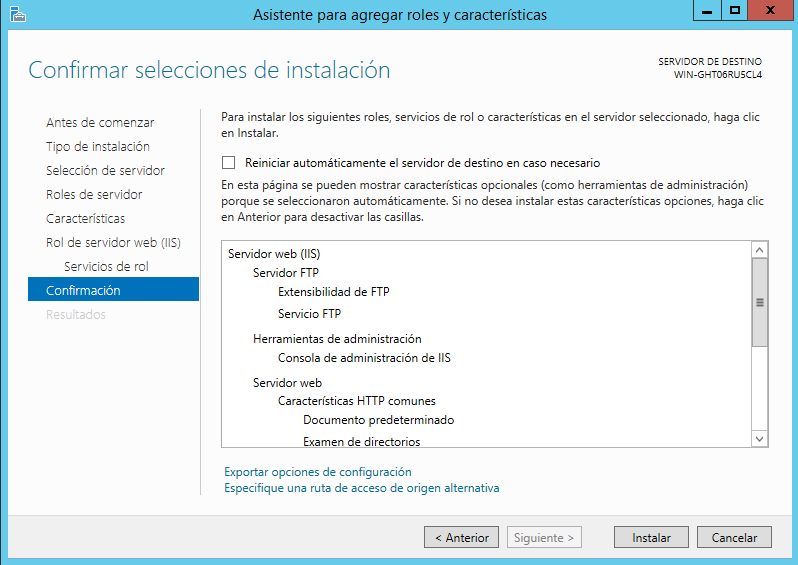

HTTP: Protocolo de Transferencia de Hipertexto-Hypertext Transfer Protocol
Puerto TCP 80
Hypertext Transfer Protocol (HTTP) (o Protocolo de Transferencia de Hipertexto en español) es un protocolo de la capa de aplicación para la transmisión de documentos hipermedia, como HTML. Fue diseñado para la comunicación entre los navegadores y servidores web, aunque se puede utilizar para otros propósitos también.

Proceso de Instalacion:
Proceso de Instalacion:
Agregar roles y caracteristicas
En la siguinete pantalla se muestra el asistente para agregar tanto el servicio FTP como otros servicios. Se hace Clic en «Siguiente».
Seleccionamos la opción «Instalación basada en características o en roles», ya que se va a configurar un solo servidor.
Mantenemos seleccionada la opción «Seleccionar un servidor del grupo de servidores» en este caso al tener un solo servidor este sera elegido para instalar el servicio
Se elige el Servicio, que aparece como Servidor web (IIS)
Aparecerá en pantalla el siguiente dialogo, se debe hacer clic en agregar caracteristicas y aparerá el servicio seleccionado
Se hará clic sucesivamente en siguiente hasta llegar a la ventana de confirmación donde se debe hacer clic en “Instalar”
Una vez instalada nos indica que la instalación es correcta y clicamos en “Cerrar”
Configuración:
Abrir «Administrador de Internet Information Services (IIS) recuadro azul
Clic en la pestaña que tine el nombre del servidor, abrirá una ventana en la que respondemos que no y clicamos en que no vuelva a repetirla. Se hace clic derecho en la carpeta Sitios y clic en Agregar sitio WEB como muestra la imagen

Abrira una nueva pantalla donde se deben completar los campos, como aparece en la imagen, se debe tener presente la carpeta o ruta donde se va a almacenar la información del sitio web, al igual que la ip y el dominio del host.

Asi quedaria la informacion:

Finalmente se tiene la imagen de la carpeta donde se almacena el sitio web, en este caso ya tiene una pagina web creada.